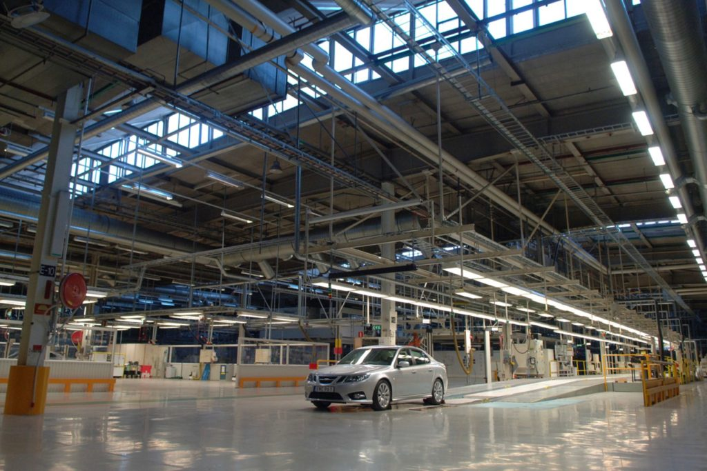
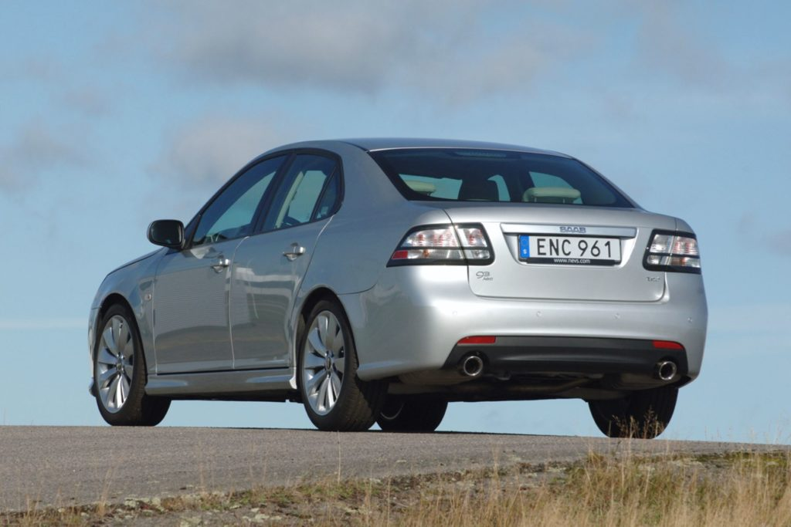

2# uutinen

Saabin henkilöautotuotannon ostanut NEVS eli National Electric Vehicle Sweden on pistänyt viimeisen koskaan valmistuneen Saab 9-3:n myytäväksi huutokauppaan. Auto on ollut jo pitkään Bilwed Auctionsin sivulla myytävänä. Arviosumma ei edes ole valtava, vaan hinnan uskotaan nousevat 35 000 ja 45 000 euron välille. Määriteltyä alinta hintaa ei kuitenkaan ole vielä tavoitettu.
Myynnissä oleva auto 9-3 Aero Turbo4, joka valmistui Trollhättanissa vuonna 2014. Sen kaksilitrainen moottori kehittää 162 kilowattia ja mallimerkinnän viimeinen numero kertoo nelivedosta.
Kilometrejä matkamittariin on kertynyt ainoastaan 66, jotka on ajettu yhtiön vanhalla testiradalla kuvauksien yhteydessä.
Auto on kuin uusi, koska se ei onneksi koskaan päätynyt kolaritesteihin kuten alun perin piti tapahtua. Tuon vuoden aikana valmistettiin ainoastaan 420 autoa, joten tämä Saab on jo sen takia harvinaisuus.
Kun vielä otetaan huomioon, että se on lajinsa viimeinen, pitäisi hinnan olla aivan toista luokkaa. Mitä ikinä autosta maksetaan, rahat lahjoitetaan NEVS:in Ruotsissa yliopistoon perustamiin Kestävän kehityksen oppisopimuksiin opiskelijoille.
Alkuperäinen julkaistu: 25.10.2019 17:39
Alkuperäinen lähde: https://tekniikanmaailma.fi/viikon-kaytetty-vuoden-2014-saab-9-3-aero-turbo4-viimeinen-koskaan-valmistettu-saab-auto-pelastui-kamalalta-kohtalolta/
Alkuperäinen teksti: Toni Jalovaara